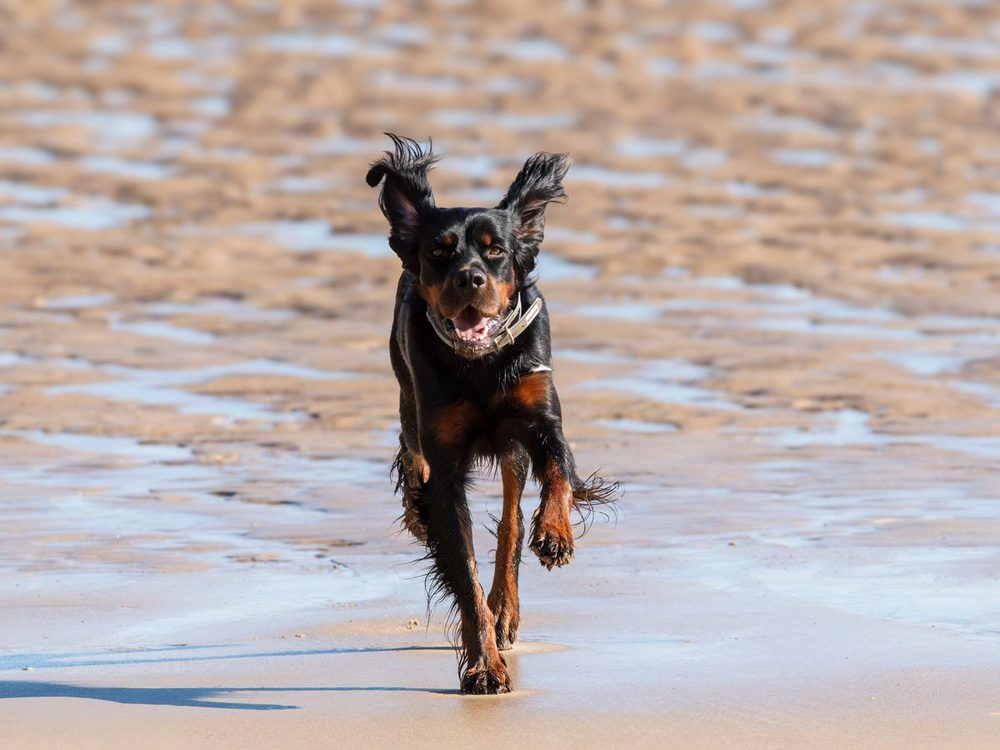

Grandview Dog Park Small-dog area
- Fenced Yes — enclosed off-leash park, 5.7 acres on the City park list
- Water Seasonal drinking water pumps (City)
- Small-dog area Yes — separate areas for smaller dogs (City)
- Hours Dawn to dusk (City)
Agility training equipment, bag station, and trash cans (City). Aurora’s largest City dog park.